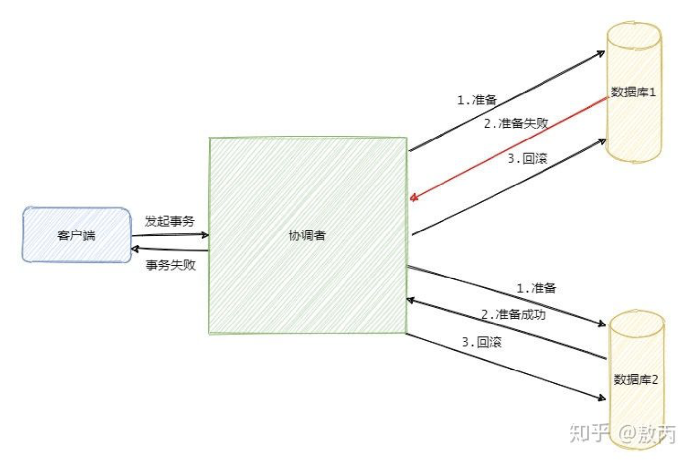
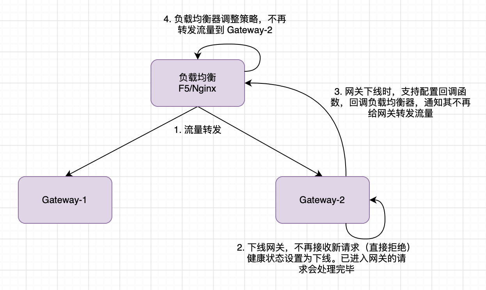

MyPro
1. Spring 解决循环依赖
出现循环依赖的前提条件：
- Bean 是单例的
- 相互依赖的 Bean 都是使用构造器注入的方式
Spring 能够解决的循环依赖类型：

Spring 解决循环依赖时的调用图：

黑色为调用走向，绿色为递归返回走向。
- Spring 是通过递归的方式获取目标 bean 及其所依赖的 bean 的；
- Spring 实例化一个 bean 的时候，是分两步进行的，首先实例化目标 bean ，然后为其注入属性。
Spring 中的 “三级缓存”：
singletonObjects:一级缓存 存储的是所有创建好了的单例BeanearlySingletonObjects：完成实例化，但是还未进行属性注入及初始化的对象singletonFactories: 提前暴露的一个单例工厂，二级缓存中存储的就是从这个工厂中获取到的对象
A 依赖于 B ， B 依赖于 A 的循环依赖解决（没有 AOP 增强的循环依赖）：

带 AOP 的循环依赖：
带AOP的跟不带AOP的其实几乎一样，只是在三级缓存中存放的是函数式接口，在需要调用时直接返回代理对象。
三级缓存存在的意义：
- 只有真正发生循环依赖的时候，才去提前生成代理对象；
- 对于没有发生循环依赖时，只会创建一个工厂并将其放入到三级缓存中，但是不会去通过这个工厂去真正创建对象；
带 AOP 的循环依赖与不带AOP 的区别是：通过三级缓存的函数式接口获取对象 A 时，是实例化后的对象 A 还是代理对象 A 。

getBean(A) 时先实例化对象 A 然后将 A 的函数式接口放入三级缓存中，通过调用函数式接口得到代理对象 A。然后为~代理~对象 A 属性注入，在注入依赖对象 B 时，B 中的依赖对象 A 是从三级缓存中获取到的代理对象 A，这时 B 对象可以顺利完成初始化，A 也可以顺利完成初始化。
重点是 A 实例化后会将用于创建代理对象 A 的函数式接口放入三级缓存中，在 B 对象进行属性注入时，是从三级缓存中获取到 A 的代理对象。
当对象 B 完成属性注入后，考虑到 A 是单例的原因，会将三级缓存的代理工厂删除，并将代理?对象 A 放入二级缓存中，等属性注入完成并初始化（执行 Aware 接口中的方法、初始化方法，完成 AOP 代理）成功后，会放入一级缓存。
为什么必须用三级缓存：
考虑到 AOP 的特性，必须以代理对象的方式实现增强。使用三级缓存时，A 对象的创建会放入三级缓存中。在 B 对象初始化完成后，就可以注入对象 A 的所有属性。这也就符合 Spring 的设计原则：对初始化后的 Bean 进行 AOP 代理；如果不使用三级缓存，就需要直接创建 A 的代理对象，这样对象 A 无法完成初始化就要进行 AOP 代理，违背 Spring 设计原则。
2. Apollo
2.1 特性
- 支持不同环境（env），不同集群（cluster），不同命名空间（namespaces）的配置
- 支持热发布
- 支持配置回滚
- 支持灰度发布，可以对部分实例生效，没问题了再推广到全部的实例
- 支持配置信息监控（哪些实例在使用）
- 除了 Portal 管理配置，也可以通过程序管理自己的配置（需在 Portal 中授权获取 Token）。支持 Java 、 Shell 、 .Net core 三种方式管理配置
- 支持 Skywalking
- 支持 prometheus
- 支持 Docker 部署，分布式部署
2.2 相关配置
必选配置：
appId: 表示应用的唯一身份appllo.meta： 用于提供给Apollo客户端当前环境的 Apollo Meta Server 信息。- 本地缓存路径：默认是
/opt/data，缓存配置命名：{appId}+{cluster}+{namespace}.properties - 自定义缓存路径：
-Dapollo.cache-dir=/opt/data/some-cache-dir或者apollo.cacheDir=/opt/data/some-cache-dir
可选配置：
- Environment :
-Denv=YOUR-ENVIRONMENT - cluster :
apollo.cluster='SomeCluster'， 首先获取apollo.cluster指定的配置，若不存在则查找数据中心?的cluster，若还不存在则使用默认的集群配置（default） - 访问密钥 ：
apollo.access-key.secret只有经过身份验证的客户端才能访问敏感配置 - 自定义 server.properties 路径：
apollo.path.server.properties - 开启propertyNames缓存：
apollo.property.names.cache.enable通过开启该配置可以显著提升启动速度，当配置发生变化时缓存会自动清理，默认为 false - ApolloLabel ：
-Dapollo.label=YOUR-APOLLO-LABELApolloLabel 是应用的标签信息，是从服务端获取配置的一个重要信息，用于灰度规则的配置。
2.3 客户端用法
- 通过 API 直接使用，不依赖于 Spring 框架。通过 API 可以获取具体某个 namespaces 的配置某一项的配置、也可以监听配置的变更。
- 与 Spring 整合：
- 支持配置到 bean xml 的配置中；
- 支持在 Java 代码中配置：
@Configuration @EnableApolloConfig - Springboot 集成：
- 支持 Spring PlaceHolder ：
- Bean XML 中：
${key:defaultValue} @Value("{key:defaultValue}")- 通过
@Configuration @EnableApolloConfig配置 Bean 的配置类，@Bean修饰的方法可以直接在 new Bean() 的时候注入属性。 @ConfigurationProperties(prefix = "redis.cache")将配置注入到普通对象到属性中。
- Bean XML 中：
- 通过注解注入
@ApolloConfig： 用来自动注入Config对象@ApolloConfigChangeListener： 用来自动注册ConfigChangeListener@ApolloJsonValue： 用来把配置的json字符串自动注入为对象@Configuration @EnableApolloConfig： 注入 Configure 类中的 Bean 属性@Value
2.4 Apollo 客户端设计原理：


配置更新推送实现：
- 客户端向服务端发起 HTTP 请求，并建立一个长链接（60s）
- 如果在 60s 内有配置更新，被保持住的客户端请求会立即返回，并告知客户端有变化的 namespaces ，客户端据此拉取有变更的 namespaces 。
- 如果 60s 内无配置更新，会返回 304 - Not Modified 给客户端。
- 客户端收到服务端请求后会重新发起长链接。
2.5 总体设计


2.6 为什么 Apollo 选用 Eureka
- 为了提高配置中心的可用性和降低部署复杂度，我们需要尽可能地减少外部依赖。
- 它提供了完整的 Service Registry 和 Service Discovery 实现，并经受住了考验
- 开源，方便问题排查
2.7 各模块介绍
- Config Service：
- 提供配置更新推送接口（基于Http long polling）
- 服务端使用Spring DeferredResult实现异步化，从而大大增加长连接数量
- 目前使用的tomcat embed默认配置是最多10000个连接（可以调整），使用了4C8G的虚拟机实测可以支撑10000个连接，所以满足需求（一个应用实例只会发起一个长连接）。
- 接口服务对象为Apollo客户端
- 提供配置更新推送接口（基于Http long polling）
- Admin Service
- 提供配置管理接口
- 提供配置修改、发布等接口
- 接口服务对象为Portal
- Meta server
- Portal通过域名访问Meta Server获取Admin Service服务列表（IP+Port）
- Client通过域名访问Meta Server获取Config Service服务列表（IP+Port）
- Meta Server从Eureka获取Config Service和Admin Service的服务信息，相当于是一个Eureka Client
- 增设一个Meta Server的角色主要是为了封装服务发现的细节，对Portal和Client而言，永远通过一个Http接口获取Admin Service和Config Service的服务信息，而不需要关心背后实际的服务注册和发现组件
- Meta Server只是一个逻辑角色，在部署时和Config Service是在一个JVM进程中的，所以IP、端口和Config Service一致
- Eureka
- 基于Eureka和Spring Cloud Netflix提供服务注册和发现
- Config Service和Admin Service会向Eureka注册服务，并保持心跳
- 为了简单起见，目前Eureka在部署时和Config Service是在一个JVM进程中的（通过Spring Cloud Netflix）
- Portal
- 提供Web界面供用户管理配置
- 通过Meta Server获取Admin Service服务列表（IP+Port），通过IP+Port访问服务
- 在Portal侧做load balance、错误重试
- Client
- Apollo提供的客户端程序，为应用提供配置获取、实时更新等功能
- 通过Meta Server获取Config Service服务列表（IP+Port），通过IP+Port访问服务
- 在Client侧做load balance、错误重试
2.8 配置发布后的实时推送设计

发送ReleaseMessage的实现方式：


Spring 中的 ApplicationContext 中会关联 ConfugurableEnvironment 对象，该对象提供了获取多个 PropertySource 的方法。而每个 PropertySource 中包含了多个 key-Value 的配置项。Spring 会顺序读取 PropertySource 中的配置（排在前面的优先级高于后面的）。 Apollo 在运行时会将配置以 PropertySource 的形式插入到 PropertySource 列表的第一个。

2.9 Namespaces
Namespaces 获取权限（针对于 Apollo 客户端）分类：
- private （私有的，只能被所属应用获取）
- public （公共的，所有应用都可以获取）
Namespaces 的类型：
- 私有类型（具有 private 权限）
- 公共类型（具有 public 权限）
- 继承类型（具有 private 权限，集成自公共类型的 Namespaces，用于覆盖公共配置中的某些配置）
3. Skywalking
Skywalking 视频教程
Skywalking 部分笔记
其他主机接入skywalking日志
其他介绍
4. 涉及 Redis 、数据库、跨中心调用时如何尽可能保持数据一致性
业务场景： 中心 A 在做业务逻辑 a 时需要更改数据库和 redis ，中心 A 成功后需要调用中心 B 的 b 接口更改中心 B 的数据。问题： 中心 A 成功更新数据库和 redis ，但是中心 B 却写入失败的情况。
解决方案： 中心 A 将操作 redis 和数据库的代码放入事务中，调用中心 B 的代码放在事务之外。这样可以保证中心 A 的操作一定是成功的状态下，才会调用中心 B 去更改数据。若事务失败，则捕获异常直接清除写入 redis 中的 key ，以保证 redis 中不存在脏数据。但是有个问题是中心 B 在更改数据库或者 redis 时失败应该怎么办？当前采用的方案是： 当中心A事务成功后，向MQ中发送一个消息（包含了中心B更新数据的输入数据），当失败时中心B从数据库中取出数据进行重试
另一种方案是使用分布式事务 分布式事务 。
仍存在的问题:
- 中心 A 在向 MQ 中写入消息时不一定是成功的，需要依赖于 MQ 的健壮性
- 当中心 B 的数据库或者 redis 挂掉后，中心 B 不见得能够重试成功。这时可以走人工
这也是尽可能的保证数据一致性。
5. 分布式事务
5.1 2PC

2PC 分两个阶段：准备阶段和提交阶段。2PC 的执行是一个 同步阻塞 的执行过程， 2PC 并不能保证数据的强一致性的原因：
- 参与者执行的状态不同。如有的参与者已经提交有的没有提交、有的已经回滚有的没有回滚、有的已经准备有的没有准备
- 2PC 是一个同步阻塞过程
协调者故障分析 :
- 假设协调者在 发送准备命令之前挂了 ，此时相当于事务没有开始
- 假设协调者在 发送准备命令之后挂了 ，此时已经执行准备命令的部分或全部参与者将会处于阻塞状态。
- 假设协调者在 发送回滚命令之前挂了 ，此时证明所有参与者都已准备好，所有的参与者都会处于阻塞状态。
- 假设协调者在 发送回滚命令之后挂了 ，此时运气好的话所有参与者都回滚，当遇到网络分区问题，会导致部分参与者收不到回滚命令而一直阻塞。
- 假设协调者在 发送提交命令之前挂了 ，此时所有参与者都处于准备状态，因此都会阻塞。
- 假设协调者在 发送提交命令之后挂了 ，此时运气好的话所有参与者都提交成功，当遇到网络分区问题，会导致部分参与者一直阻塞。
协调者故障，通过选举产生新的协调者：
- 若选举发生在第一阶段：所有协调者都处于准备阶段，通过回滚就可以解决。
- 若选举发生在第二阶段：
- 假设所有协调者没有挂，此时协调者可以向所有参与者询问执行情况来推断下一步操作。
- 假设有部分协调者挂掉，新的协调者不知道哪个参与者挂掉了（因为新的协调者只能询问存活的参与者的状态），所以没有办法保证挂掉的协调者的数据与其他正常协调者的一致。
- 这种问题可以通过协调者写入日志来 记录发过哪些日志 ，新协调者可以通过日志判断哪些协调者挂掉。
- 问题：当旧协调者发送提交命令后，由于网络分区原因部分协调者没有收到命令，收到命令的成功提交。这时候新协调者在面对部分或所有参与者挂掉的情况，就无法判断哪些挂掉的协调者已经提交，哪些没有提交。
由于 2PC 的 协调者单点故障问题 因此在极端情况下 2PC 仍无法保证数据强 一致性，只是 尽量保证强一致性 。
5.2 3PC
3PC 的出现是为了解决 2PC 的一些问题，相比于 2PC 它 在参与者中也引入了超时机制 ，并且 新增了一个阶段 使得参与者可以利用这一个阶段统一各自的状态。
3PC ： 包含 准备阶段(CanCommit)、预提交阶段(PreCommit)和提交阶段(DoCommit)
相对于 2PC ，3PC 将提交阶段分为了 预提交阶段和提交阶段 ，并且 3PC 协调者只是询问参与者负载是否沉重之类的。
 3PC的特点：
3PC的特点： * 准备阶段的变更成不会直接执行事务，仅仅是询问是否有条件执行该事务，因此不会一上来就直接锁资源。
- 预提交阶段的引入起到了一个统一状态的作用 ，到达预提交阶段表明所有参与者都已经回应了，当前可以执行事务。对于参与者而言，当其进入到预提交状态或者提交状态，则可以肯定其他参与者也到达了预提交状态或者提交状态。
- 接上一点，当发送 提交命令（或回滚命令）之前 （此时所有参与者都已是预提交状态），协调者和部分参与者挂掉了，有两种情况：一是存活参与者触发超时，直接提交（此时若协调者发送的是回滚命令这时就会有一致性问题了）；一是协调者在存活参与者超时之前苏醒，这时协调者就不知道是该发送提交命令还是回滚命令（可以通过协调者写入日志来避免这种情况）。
- 当协调者挂掉后，由于参与者引入了超时机制，参与者不会一直等待。如果是参与者等待提交命令超时，那么参与者就会直接提交事务；如果是参与者等待预提交命令超时，那就该干啥干啥，参与者不受影响。这里有一个问题是：参与者无法判断是提交命令超时，还是回滚命令超时。如果是回滚命令超时，但是参与者执行的是提交命令，这时就会有数据不一致的问题。（因为有的提交了，有的回滚了）。
3PC 相对于 2PC 做了一定的改进：引入了参与者超时机制，并且增加了预提交阶段使得故障恢复之后协调者的决策复杂度降低，但整体的交互过程更长了，性能有所下降，并且还是会存在数据不一致问题。所以 2PC 和 3PC 都不能保证数据100%一致，因此一般都需要有定时扫描补偿机制。
5.3 TCC
2PC和3PC都是数据库层面的，而TCC是业务层面的分布式事务 。TCC 指的是 Try - Confirm - Cancel：
- Try 指的是预留，即资源的预留和锁定， 注意是预留 。
- Confirm 指的是确认操作，这一步其实就是真正的执行了。
- Cancel 指的是撤销操作，可以理解为把预留阶段的动作撤销了。

其实从思想上看和 2PC 差不多，都是先试探性的执行，如果都可以那就真正的执行，如果不行就回滚。
比如说一个事务要执行A、B、C三个操作，那么先对三个操作执行预留动作。如果都预留成功了那么就执行确认操作，如果有一个预留失败那就都执行撤销动作。
可以看到流程还是很简单的，难点在于业务上的定义，对于每一个操作你都需要定义三个动作分别对应Try - Confirm - Cancel。
因此 TCC对业务的侵入较大和业务紧耦合 ，需要根据特定的场景和业务逻辑来设计相应的操作。
还有一点要注意，撤销和确认操作的执行可能需要重试，因此还需要保证 操作的幂等 。
相对于 2PC、3PC ，TCC 适用的范围更大，但是开发量也更大，毕竟都在业务上实现，而且有时候你会发现这三个方法还真不好写。不过也因为是在业务上实现的，所以 TCC可以跨数据库、跨不同的业务系统来实现事务 。
5.4 本地消息表
本地消息表是利用 本地事务来实现分布式事务 。具体实现是将 业务的执行和将消息放入本地消息表的操作放入同一个本地事务中 ，这样可以保证消息放入本地消息表中一定是执行成功的。完了后，启动 后台任务定时读取本地消息表 筛选出还未成功的消息再调用对应的服务，服务更新成功了再变更消息的状态。这时候有可能消息对应的操作不成功，因此也需要 重试 ，重试就得保证对应服务的方法是 幂等 的，而且一般重试会有最大次数， 超过最大次数可以记录下报警让人工处理 。
本地消息表其实实现的是 最终一致性 ，容忍了数据 暂时不一致 的情况。
5.5 消息事务
 反查事务接口 的作用是：发送方过了一段时间并没有向 Broker 发送 Commit 或者 Rollback 消息，这时 Broker 可以通过反查事务接口去查询发送方事务是否成功，来决定半消息如何处理（是向订阅方发送 commit 命令还是丢弃半消息）。
反查事务接口 的作用是：发送方过了一段时间并没有向 Broker 发送 Commit 或者 Rollback 消息，这时 Broker 可以通过反查事务接口去查询发送方事务是否成功，来决定半消息如何处理（是向订阅方发送 commit 命令还是丢弃半消息）。消息事务也是保证的 最终一致性 。
## 5.6 最大努力通知 其实我觉得本地消息表也可以算最大努力，事务消息也可以算最大努力。
就本地消息表来说会有后台任务定时去查看未完成的消息，然后去调用对应的服务，当一个消息多次调用都失败的时候可以记录下然后引入人工，或者直接舍弃。这其实算是最大努力了。
事务消息也是一样，当半消息被commit了之后确实就是普通消息了，如果订阅者一直不消费或者消费不了则会一直重试，到最后进入死信队列。其实这也算最大努力。
所以 最大努力通知其实只是表明了一种柔性事务的思想
即最大的努力想达成事务的最终一致。
适用于对时间不敏感的业务，例如短信通知。
5.7 总结
可以看出 2PC 和 3PC 是一种强一致性事务，不过还是有数据不一致，阻塞等风险，而且只能用在数据库层面。
而 TCC 是一种补偿性事务思想，适用的范围更广，在业务层面实现，因此对业务的侵入性较大，每一个操作都需要实现对应的三个方法。
本地消息、事务消息和最大努力通知其实都是最终一致性事务，因此适用于一些对时间不敏感的业务。
5.8 SAGA
SAGA 简介：
- 只满足 ACD ，缺乏对于隔离性的支持。
- 只能保证 AP 即最终一致性。
- 通过使用 异步消息 来协调一系列本地事务，从而维护多个服务之间数据的最终一致性。
- SAGA 是由一系列的本地事务来协调完成一个分布式事务的。每个参与者创建自己的本地事务完成后提交，然后出发下一个系统的本地事务直到所有的本地事务都完成，则分布式事务完成。
- 每个参与者在创建本地事务的同时也会提供补偿事务（即当触发回滚时，为了保证数据一致性而进行的本地事务操作的逆操作）。
使用异步消息的好处是：可以确保 SAGA 的所有步骤都可以被执行，即使有一个或多个参与者暂时不可用。
关于隔离性：许多应用通过使用更低的隔离级别来提高性能。如在不同银行之间转账，也仅仅是遵守最终一致性的原则。
SAGA保证数据一致性：
SAGA 事务的分类：
- 可补偿事务：必须使用补偿事务回滚的事务
- 关键性事务：如果关键性事务成功，则 SAGA 将一直运行直到完成。关键性事务不见得是一个可补偿事务，或者可重复事务。但是它可以是最后一个可补偿事务或者第一个可重复事务。
- 可重复事务：在关键性事务之后的事务，保证成功。

一种事务失败的情况：

5.8.1 SAGA的协调模式
5.8.1.1 协同式 SAGA
这种方式没有一个中央协调器告诉 SAGA 参与者应该怎么做。 SAGA 参与者仅通过订阅彼此的事件来做出相应的响应。
SAGA 实现给予发布 / 订阅的通信时需要考虑的一些问题： 可靠的事件通信
确保 SAGA 参与方将更新器本地数据库和发布事件作为数据库事务的一部分。即数据库更新和事件发布必须是原子的。因此为了可靠的通信， SAGA 参与方必须使用事务性消息（第三章内容）。
确保 SAGA 参与方必须能够接收到的每个事件映射到自己的数据上。如引入 相关性 ID ，使得订阅者根据该 ID 可以找到操作的数据。

协同式 SAGA 的弊端：


5.8.1.2 编排式 SAGA
简介：
参与者的协调工作通过一个集中控制器来控制。 SAGA 编排器使用命令 / 异步响应方式告诉 SAGA 的参与方该做什么事情。当参与方完成操作后，会给编排器发送一个答复消息。编排器处理这个消息，并决定 SAGA 下一步的操作。

将 SAGA 编排器视为一个状态机：

编排式 SAGA 的优点：

编排式 SAGA 弊端：

5.8.2 解决 SAGA 隔离问题
所谓隔离指的是：可以确保同时执行多个事务的结果与顺序执行它们的结果相同。
缺乏隔离会引起其他 SAGA 可以更改当前 SAGA 正在访问的数据，因此会导致如下问题：

5.8.2.1 语义锁

如何处理已被锁定的记录：
- 让 cancelOrder() 系统命令执行失败并告诉客户端 稍后再试。这样做的好处是易于实现。弊端是客户端必须实现重试逻辑。
- 让 cancelOrder() 处于阻塞状态，知道其他 SAGA 释放了语义锁。好处是重建了 ACID 事务提供的隔离。更新相同记录的 SAGA 被序列化，减少了编程工作量。另一个好处是消除了客户端重试的负担。缺点是应用必须管理锁，还必须实现死锁检测算法，该算法执行 SAGA 的回滚以打破死锁并重新执行它。
5.8.2.2 交换式更新
5.8.2.3 悲观视图
重新排序 SAGA 的步骤，以 最大限度 地降低由于脏读而导致的业务风险。
如 create order saga 执行了可用信用额度的脏读，并创建了超过消费者信用额度的订单。为了降低发生这种情况的风险，可以重排 Cancel Order SAGA：

5.8.2.4 重读值
重读值可以防止丢失更新。类似于 CAS ，在 SAGA 更新前重新读取记录，看记录中的计数器是否更改，如果记录更改，则 SAGA 终止，然后回滚。
5.8.2.5 版本文件
5.8.2.6 业务风险评级
这是一种基于业务风险选择并发机制的策略。使用 SAGA 执行低风险请求，使用分布式事务执行高风险请求。
6. 优雅停机
整体思路：

7. 关于高并发的一点思考
架构决定并发上限，代码决定并发下线第一点：通过网关做限流熔断、请求的单元分发。
当系统出现大量请求时，使用网关做 限流熔断 。所谓 限流 指的是满足系统处理速度的近乎上限，对于多余的流量直接拒绝。所谓 熔断 指的是当前并发量超过了系统处理的极限，导致服务无法正常处理，这时服务不做业务处理统一返回固定报文。当然网关也可以使用 MQ 做削峰填谷。
第二点：数据单元化
以双十一场景为例，可以用商品 ID 做单元化（一个单元仅处理一定范围的商品 ID ）。同样数据库也做单元化。
这种情况会有一个问题是，一个事务如果涉及跨单元的情况下又可能导致不同单元的事务不一致。这种情况下，有很多种方式进行补救。现在提供一种方式： SAGA 模式，使用各个系统内的本地事务来实现分布式事务。当系统 A 有一个需要事务处理的交易，这时候一个系统一个系统的去询问相关系统是否可执行，当执行完（但是不能提交事务，防止后续系统产生异常时方便回滚），当所有系统都完成时一起提交事务。这个过程中 尽可能的提高通讯效率，当服务处理慢的时候提供熔断机制，以提高相应速度。
第三点：代码层面
少访问数据库，少使用大事务，使用缓存。
第四点：数据一致性保证
数据库加锁做最后的保证。考虑到分布式锁不是特别成熟，因此在业务逻辑中对于无关紧要的需要做数据一致性限制的地方使用分布式锁。对于关键代码还是要靠数据库锁。